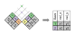
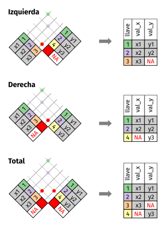
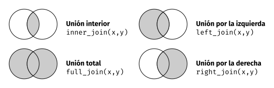
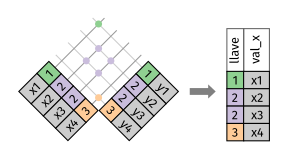

19 Relational data
19.1 Introduction
It’s rare that a data analysis involves only a single table of data. Typically you have many tables of data, and you must combine them to answer the questions that you’re interested in. Collectively, multiple tables of data are called relational data because it is the relations, not just the individual datasets, that are important.
Relations are always defined between a pair of tables. All other relations are built up from this simple idea: the relations of three or more tables are always a property of the relations between each pair. Sometimes both elements of a pair can be the same table! This is needed if, for example, you have a table of people, and each person has a reference to their parents.
To work with relational data you need verbs that work with pairs of tables. There are three families of verbs designed to work with relational data:
Mutating joins, which add new variables to one data frame from matching observations in another.
Filtering joins, which filter observations from one data frame based on whether or not they match an observation in the other table.
Set operations, which treat observations as if they were set elements.
The most common place to find relational data is in a relational database management system (or RDBMS), a term that encompasses almost all modern databases. If you’ve used a database before, you’ve almost certainly used SQL. If so, you should find the concepts in this chapter familiar, although their expression in dplyr is a little different. Generally, dplyr is a little easier to use than SQL because dplyr is specialised to do data analysis: it makes common data analysis operations easier, at the expense of making it more difficult to do other things that aren’t commonly needed for data analysis.
19.1.1 Prerequisites
We will explore relational data from nycflights13 using the two-table verbs from dplyr.
library(tidyverse)
library(nycflights13)19.2 nycflights13
We will use the nycflights13 package to learn about relational data. nycflights13 contains four tibbles that are related to the flights table that you used in [data transformation]:
airlineslets you look up the full carrier name from its abbreviated code:
airlines
#> # A tibble: 16 x 2
#> carrier name
#> <chr> <chr>
#> 1 9E Endeavor Air Inc.
#> 2 AA American Airlines Inc.
#> 3 AS Alaska Airlines Inc.
#> 4 B6 JetBlue Airways
#> 5 DL Delta Air Lines Inc.
#> 6 EV ExpressJet Airlines Inc.
#> # … with 10 more rowsairportsgives information about each airport, identified by thefaaairport code:
airports
#> # A tibble: 1,458 x 8
#> faa name lat lon alt tz dst tzone
#> <chr> <chr> <dbl> <dbl> <int> <dbl> <chr> <chr>
#> 1 04G Lansdowne Airport 41.1 -80.6 1044 -5 A America/New…
#> 2 06A Moton Field Municipal A… 32.5 -85.7 264 -6 A America/Chi…
#> 3 06C Schaumburg Regional 42.0 -88.1 801 -6 A America/Chi…
#> 4 06N Randall Airport 41.4 -74.4 523 -5 A America/New…
#> 5 09J Jekyll Island Airport 31.1 -81.4 11 -5 A America/New…
#> 6 0A9 Elizabethton Municipal … 36.4 -82.2 1593 -5 A America/New…
#> # … with 1,452 more rowsplanesgives information about each plane, identified by itstailnum:
planes
#> # A tibble: 3,322 x 9
#> tailnum year type manufacturer model engines seats speed engine
#> <chr> <int> <chr> <chr> <chr> <int> <int> <int> <chr>
#> 1 N10156 2004 Fixed win… EMBRAER EMB-1… 2 55 NA Turbo…
#> 2 N102UW 1998 Fixed win… AIRBUS INDUST… A320-… 2 182 NA Turbo…
#> 3 N103US 1999 Fixed win… AIRBUS INDUST… A320-… 2 182 NA Turbo…
#> 4 N104UW 1999 Fixed win… AIRBUS INDUST… A320-… 2 182 NA Turbo…
#> 5 N10575 2002 Fixed win… EMBRAER EMB-1… 2 55 NA Turbo…
#> 6 N105UW 1999 Fixed win… AIRBUS INDUST… A320-… 2 182 NA Turbo…
#> # … with 3,316 more rowsweathergives the weather at each NYC airport for each hour:
weather
#> # A tibble: 26,115 x 15
#> origin year month day hour temp dewp humid wind_dir wind_speed
#> <chr> <dbl> <dbl> <int> <int> <dbl> <dbl> <dbl> <dbl> <dbl>
#> 1 EWR 2013 1 1 1 39.0 26.1 59.4 270 10.4
#> 2 EWR 2013 1 1 2 39.0 27.0 61.6 250 8.06
#> 3 EWR 2013 1 1 3 39.0 28.0 64.4 240 11.5
#> 4 EWR 2013 1 1 4 39.9 28.0 62.2 250 12.7
#> 5 EWR 2013 1 1 5 39.0 28.0 64.4 260 12.7
#> 6 EWR 2013 1 1 6 37.9 28.0 67.2 240 11.5
#> # … with 2.611e+04 more rows, and 5 more variables: wind_gust <dbl>,
#> # precip <dbl>, pressure <dbl>, visib <dbl>, time_hour <dttm>One way to show the relationships between the different tables is with a drawing:

This diagram is a little overwhelming, but it’s simple compared to some you’ll see in the wild! The key to understanding diagrams like this is to remember each relation always concerns a pair of tables. You don’t need to understand the whole thing; you just need to understand the chain of relations between the tables that you are interested in.
For nycflights13:
flightsconnects toplanesvia a single variable,tailnum.flightsconnects toairlinesthrough thecarriervariable.flightsconnects toairportsin two ways: via theoriginanddestvariables.flightsconnects toweatherviaorigin(the location), andyear,month,dayandhour(the time).
19.2.1 Exercises
Imagine you wanted to draw (approximately) the route each plane flies from its origin to its destination. What variables would you need? What tables would you need to combine?
I forgot to draw the relationship between
weatherandairports. What is the relationship and how should it appear in the diagram?weatheronly contains information for the origin (NYC) airports. If it contained weather records for all airports in the USA, what additional relation would it define withflights?We know that some days of the year are “special”, and fewer people than usual fly on them. How might you represent that data as a data frame? What would be the primary keys of that table? How would it connect to the existing tables?
19.3 Keys
The variables used to connect each pair of tables are called keys. A key is a variable (or set of variables) that uniquely identifies an observation. In simple cases, a single variable is sufficient to identify an observation. For example, each plane is uniquely identified by its tailnum. In other cases, multiple variables may be needed. For example, to identify an observation in weather you need five variables: year, month, day, hour, and origin.
There are two types of keys:
A primary key uniquely identifies an observation in its own table. For example,
planes$tailnumis a primary key because it uniquely identifies each plane in theplanestable.A foreign key uniquely identifies an observation in another table. For example, the
flights$tailnumis a foreign key because it appears in theflightstable where it matches each flight to a unique plane.
A variable can be both a primary key and a foreign key. For example, origin is part of the weather primary key, and is also a foreign key for the airport table.
Once you’ve identified the primary keys in your tables, it’s good practice to verify that they do indeed uniquely identify each observation. One way to do that is to count() the primary keys and look for entries where n is greater than one:
planes %>%
count(tailnum) %>%
filter(n > 1)
#> # A tibble: 0 x 2
#> # … with 2 variables: tailnum <chr>, n <int>
weather %>%
count(year, month, day, hour, origin) %>%
filter(n > 1)
#> # A tibble: 3 x 6
#> year month day hour origin n
#> <dbl> <dbl> <int> <int> <chr> <int>
#> 1 2013 11 3 1 EWR 2
#> 2 2013 11 3 1 JFK 2
#> 3 2013 11 3 1 LGA 2Sometimes a table doesn’t have an explicit primary key: each row is an observation, but no combination of variables reliably identifies it. For example, what’s the primary key in the flights table? You might think it would be the date plus the flight or tail number, but neither of those are unique:
flights %>%
count(year, month, day, flight) %>%
filter(n > 1)
#> # A tibble: 29,768 x 5
#> year month day flight n
#> <int> <int> <int> <int> <int>
#> 1 2013 1 1 1 2
#> 2 2013 1 1 3 2
#> 3 2013 1 1 4 2
#> 4 2013 1 1 11 3
#> 5 2013 1 1 15 2
#> 6 2013 1 1 21 2
#> # … with 2.976e+04 more rows
flights %>%
count(year, month, day, tailnum) %>%
filter(n > 1)
#> # A tibble: 64,928 x 5
#> year month day tailnum n
#> <int> <int> <int> <chr> <int>
#> 1 2013 1 1 N0EGMQ 2
#> 2 2013 1 1 N11189 2
#> 3 2013 1 1 N11536 2
#> 4 2013 1 1 N11544 3
#> 5 2013 1 1 N11551 2
#> 6 2013 1 1 N12540 2
#> # … with 6.492e+04 more rowsWhen starting to work with this data, I had naively assumed that each flight number would be only used once per day: that would make it much easier to communicate problems with a specific flight. Unfortunately that is not the case! If a table lacks a primary key, it’s sometimes useful to add one with mutate() and row_number(). That makes it easier to match observations if you’ve done some filtering and want to check back in with the original data. This is called a surrogate key.
A primary key and the corresponding foreign key in another table form a relation. Relations are typically one-to-many. For example, each flight has one plane, but each plane has many flights. In other data, you’ll occasionally see a 1-to-1 relationship. You can think of this as a special case of 1-to-many. You can model many-to-many relations with a many-to-1 relation plus a 1-to-many relation. For example, in this data there’s a many-to-many relationship between airlines and airports: each airline flies to many airports; each airport hosts many airlines.
19.3.1 Exercises
Add a surrogate key to
flights.Identify the keys in the following datasets
Lahman::Batting,babynames::babynamesnasaweather::atmosfueleconomy::vehiclesggplot2::diamonds
(You might need to install some packages and read some documentation.)
- Draw a diagram illustrating the connections between the
Batting,Master, andSalariestables in the Lahman package. Draw another diagram that shows the relationship betweenMaster,Managers,AwardsManagers.
How would you characterise the relationship between the Batting,
Pitching, and Fielding tables?
19.4 Mutating joins
The first tool we’ll look at for combining a pair of tables is the mutating join. A mutating join allows you to combine variables from two tables. It first matches observations by their keys, then copies across variables from one table to the other.
Like mutate(), the join functions add variables to the right, so if you have a lot of variables already, the new variables won’t get printed out. For these examples, we’ll make it easier to see what’s going on in the examples by creating a narrower dataset:
flights2 <- flights %>%
select(year:day, hour, origin, dest, tailnum, carrier)
flights2
#> # A tibble: 336,776 x 8
#> year month day hour origin dest tailnum carrier
#> <int> <int> <int> <dbl> <chr> <chr> <chr> <chr>
#> 1 2013 1 1 5 EWR IAH N14228 UA
#> 2 2013 1 1 5 LGA IAH N24211 UA
#> 3 2013 1 1 5 JFK MIA N619AA AA
#> 4 2013 1 1 5 JFK BQN N804JB B6
#> 5 2013 1 1 6 LGA ATL N668DN DL
#> 6 2013 1 1 5 EWR ORD N39463 UA
#> # … with 3.368e+05 more rows(Remember, when you’re in RStudio, you can also use View() to avoid this problem.)
Imagine you want to add the full airline name to the flights2 data. You can combine the airlines and flights2 data frames with left_join():
flights2 %>%
select(-origin, -dest) %>%
left_join(airlines, by = "carrier")
#> # A tibble: 336,776 x 7
#> year month day hour tailnum carrier name
#> <int> <int> <int> <dbl> <chr> <chr> <chr>
#> 1 2013 1 1 5 N14228 UA United Air Lines Inc.
#> 2 2013 1 1 5 N24211 UA United Air Lines Inc.
#> 3 2013 1 1 5 N619AA AA American Airlines Inc.
#> 4 2013 1 1 5 N804JB B6 JetBlue Airways
#> 5 2013 1 1 6 N668DN DL Delta Air Lines Inc.
#> 6 2013 1 1 5 N39463 UA United Air Lines Inc.
#> # … with 3.368e+05 more rowsThe result of joining airlines to flights2 is an additional variable: name. This is why I call this type of join a mutating join. In this case, you could have got to the same place using mutate() and R’s base subsetting:
flights2 %>%
select(-origin, -dest) %>%
mutate(name = airlines$name[match(carrier, airlines$carrier)])
#> # A tibble: 336,776 x 7
#> year month day hour tailnum carrier name
#> <int> <int> <int> <dbl> <chr> <chr> <chr>
#> 1 2013 1 1 5 N14228 UA United Air Lines Inc.
#> 2 2013 1 1 5 N24211 UA United Air Lines Inc.
#> 3 2013 1 1 5 N619AA AA American Airlines Inc.
#> 4 2013 1 1 5 N804JB B6 JetBlue Airways
#> 5 2013 1 1 6 N668DN DL Delta Air Lines Inc.
#> 6 2013 1 1 5 N39463 UA United Air Lines Inc.
#> # … with 3.368e+05 more rowsBut this is hard to generalise when you need to match multiple variables, and takes close reading to figure out the overall intent.
The following sections explain, in detail, how mutating joins work. You’ll start by learning a useful visual representation of joins. We’ll then use that to explain the four mutating join functions: the inner join, and the three outer joins. When working with real data, keys don’t always uniquely identify observations, so next we’ll talk about what happens when there isn’t a unique match. Finally, you’ll learn how to tell dplyr which variables are the keys for a given join.
19.4.1 Understanding joins
To help you learn how joins work, I’m going to use a visual representation:

x <- tribble(
~key, ~val_x,
1, "x1",
2, "x2",
3, "x3"
)
y <- tribble(
~key, ~val_y,
1, "y1",
2, "y2",
4, "y3"
)The coloured column represents the “key” variable: these are used to match the rows between the tables. The grey column represents the “value” column that is carried along for the ride. In these examples I’ll show a single key variable, but the idea generalises in a straightforward way to multiple keys and multiple values.
A join is a way of connecting each row in x to zero, one, or more rows in y. The following diagram shows each potential match as an intersection of a pair of lines.

(If you look closely, you might notice that we’ve switched the order of the key and value columns in x. This is to emphasise that joins match based on the key; the value is just carried along for the ride.)
In an actual join, matches will be indicated with dots. The number of dots = the number of matches = the number of rows in the output.

19.4.2 Inner join
The simplest type of join is the inner join. An inner join matches pairs of observations whenever their keys are equal:
(To be precise, this is an inner equijoin because the keys are matched using the equality operator. Since most joins are equijoins we usually drop that specification.)
The output of an inner join is a new data frame that contains the key, the x values, and the y values. We use by to tell dplyr which variable is the key:
x %>%
inner_join(y, by = "key")
#> # A tibble: 2 x 3
#> key val_x val_y
#> <dbl> <chr> <chr>
#> 1 1 x1 y1
#> 2 2 x2 y2The most important property of an inner join is that unmatched rows are not included in the result. This means that generally inner joins are usually not appropriate for use in analysis because it’s too easy to lose observations.
19.4.3 Outer joins
An inner join keeps observations that appear in both tables. An outer join keeps observations that appear in at least one of the tables. There are three types of outer joins:
- A left join keeps all observations in
x. - A right join keeps all observations in
y. - A full join keeps all observations in
xandy.
These joins work by adding an additional “virtual” observation to each table. This observation has a key that always matches (if no other key matches), and a value filled with NA.
Graphically, that looks like:

The most commonly used join is the left join: you use this whenever you look up additional data from another table, because it preserves the original observations even when there isn’t a match. The left join should be your default join: use it unless you have a strong reason to prefer one of the others.
Another way to depict the different types of joins is with a Venn diagram:

However, this is not a great representation. It might jog your memory about which join preserves the observations in which table, but it suffers from a major limitation: a Venn diagram can’t show what happens when keys don’t uniquely identify an observation.
19.4.4 Duplicate keys
So far all the diagrams have assumed that the keys are unique. But that’s not always the case. This section explains what happens when the keys are not unique. There are two possibilities:
- One table has duplicate keys. This is useful when you want to add in additional information as there is typically a one-to-many relationship.

Note that I’ve put the key column in a slightly different position
in the output. This reflects that the key is a primary key in y
and a foreign key in x.
x <- tribble(
~key, ~val_x,
1, "x1",
2, "x2",
2, "x3",
1, "x4"
)
y <- tribble(
~key, ~val_y,
1, "y1",
2, "y2"
)
left_join(x, y, by = "key")
#> # A tibble: 4 x 3
#> key val_x val_y
#> <dbl> <chr> <chr>
#> 1 1 x1 y1
#> 2 2 x2 y2
#> 3 2 x3 y2
#> 4 1 x4 y1- Both tables have duplicate keys. This is usually an error because in neither table do the keys uniquely identify an observation. When you join duplicated keys, you get all possible combinations, the Cartesian product:

x <- tribble(
~key, ~val_x,
1, "x1",
2, "x2",
2, "x3",
3, "x4"
)
y <- tribble(
~key, ~val_y,
1, "y1",
2, "y2",
2, "y3",
3, "y4"
)
left_join(x, y, by = "key")
#> # A tibble: 6 x 3
#> key val_x val_y
#> <dbl> <chr> <chr>
#> 1 1 x1 y1
#> 2 2 x2 y2
#> 3 2 x2 y3
#> 4 2 x3 y2
#> 5 2 x3 y3
#> 6 3 x4 y419.4.5 Defining the key columns
So far, the pairs of tables have always been joined by a single variable, and that variable has the same name in both tables. That constraint was encoded by by = "key". You can use other values for by to connect the tables in other ways:
- The default,
by = NULL, uses all variables that appear in both tables, the so called natural join. For example, the flights and weather tables match on their common variables:year,month,day,hourandorigin.
flights2 %>%
left_join(weather)
#> Joining, by = c("year", "month", "day", "hour", "origin")
#> # A tibble: 336,776 x 18
#> year month day hour origin dest tailnum carrier temp dewp humid
#> <dbl> <dbl> <int> <dbl> <chr> <chr> <chr> <chr> <dbl> <dbl> <dbl>
#> 1 2013 1 1 5 EWR IAH N14228 UA 39.0 28.0 64.4
#> 2 2013 1 1 5 LGA IAH N24211 UA 39.9 25.0 54.8
#> 3 2013 1 1 5 JFK MIA N619AA AA 39.0 27.0 61.6
#> 4 2013 1 1 5 JFK BQN N804JB B6 39.0 27.0 61.6
#> 5 2013 1 1 6 LGA ATL N668DN DL 39.9 25.0 54.8
#> 6 2013 1 1 5 EWR ORD N39463 UA 39.0 28.0 64.4
#> # … with 3.368e+05 more rows, and 7 more variables: wind_dir <dbl>,
#> # wind_speed <dbl>, wind_gust <dbl>, precip <dbl>, pressure <dbl>,
#> # visib <dbl>, time_hour <dttm>- A character vector,
by = "x". This is like a natural join, but uses only some of the common variables. For example,flightsandplaneshaveyearvariables, but they mean different things so we only want to join bytailnum.
flights2 %>%
left_join(planes, by = "tailnum")
#> # A tibble: 336,776 x 16
#> year.x month day hour origin dest tailnum carrier year.y type
#> <int> <int> <int> <dbl> <chr> <chr> <chr> <chr> <int> <chr>
#> 1 2013 1 1 5 EWR IAH N14228 UA 1999 Fixe…
#> 2 2013 1 1 5 LGA IAH N24211 UA 1998 Fixe…
#> 3 2013 1 1 5 JFK MIA N619AA AA 1990 Fixe…
#> 4 2013 1 1 5 JFK BQN N804JB B6 2012 Fixe…
#> 5 2013 1 1 6 LGA ATL N668DN DL 1991 Fixe…
#> 6 2013 1 1 5 EWR ORD N39463 UA 2012 Fixe…
#> # … with 3.368e+05 more rows, and 6 more variables: manufacturer <chr>,
#> # model <chr>, engines <int>, seats <int>, speed <int>, engine <chr>Note that the year variables (which appear in both input data frames,
but are not constrained to be equal) are disambiguated in the output with
a suffix.
- A named character vector:
by = c("a" = "b"). This will match variableain tablexto variablebin tabley. The variables fromxwill be used in the output.
For example, if we want to draw a map we need to combine the flights data
with the airports data which contains the location (lat and lon) of
each airport. Each flight has an origin and destination airport, so we
need to specify which one we want to join to:
flights2 %>%
left_join(airports, c("dest" = "faa"))
#> # A tibble: 336,776 x 15
#> year month day hour origin dest tailnum carrier name lat lon
#> <int> <int> <int> <dbl> <chr> <chr> <chr> <chr> <chr> <dbl> <dbl>
#> 1 2013 1 1 5 EWR IAH N14228 UA Geor… 30.0 -95.3
#> 2 2013 1 1 5 LGA IAH N24211 UA Geor… 30.0 -95.3
#> 3 2013 1 1 5 JFK MIA N619AA AA Miam… 25.8 -80.3
#> 4 2013 1 1 5 JFK BQN N804JB B6 <NA> NA NA
#> 5 2013 1 1 6 LGA ATL N668DN DL Hart… 33.6 -84.4
#> 6 2013 1 1 5 EWR ORD N39463 UA Chic… 42.0 -87.9
#> # … with 3.368e+05 more rows, and 4 more variables: alt <int>, tz <dbl>,
#> # dst <chr>, tzone <chr>
flights2 %>%
left_join(airports, c("origin" = "faa"))
#> # A tibble: 336,776 x 15
#> year month day hour origin dest tailnum carrier name lat lon
#> <int> <int> <int> <dbl> <chr> <chr> <chr> <chr> <chr> <dbl> <dbl>
#> 1 2013 1 1 5 EWR IAH N14228 UA Newa… 40.7 -74.2
#> 2 2013 1 1 5 LGA IAH N24211 UA La G… 40.8 -73.9
#> 3 2013 1 1 5 JFK MIA N619AA AA John… 40.6 -73.8
#> 4 2013 1 1 5 JFK BQN N804JB B6 John… 40.6 -73.8
#> 5 2013 1 1 6 LGA ATL N668DN DL La G… 40.8 -73.9
#> 6 2013 1 1 5 EWR ORD N39463 UA Newa… 40.7 -74.2
#> # … with 3.368e+05 more rows, and 4 more variables: alt <int>, tz <dbl>,
#> # dst <chr>, tzone <chr>19.4.6 Exercises
- Compute the average delay by destination, then join on the
airportsdata frame so you can show the spatial distribution of delays. Here’s an easy way to draw a map of the United States:
airports %>%
semi_join(flights, c("faa" = "dest")) %>%
ggplot(aes(lon, lat)) +
borders("state") +
geom_point() +
coord_quickmap()(Don’t worry if you don’t understand what semi_join() does — you’ll
learn about it next.)
You might want to use the size or colour of the points to display
the average delay for each airport.
Add the location of the origin and destination (i.e. the
latandlon) toflights.Is there a relationship between the age of a plane and its delays?
What weather conditions make it more likely to see a delay?
What happened on June 13 2013? Display the spatial pattern of delays, and then use Google to cross-reference with the weather.
19.4.7 Other implementations
base::merge() can perform all four types of mutating join:
| dplyr | merge |
|---|---|
inner_join(x, y) |
merge(x, y) |
left_join(x, y) |
merge(x, y, all.x = TRUE) |
right_join(x, y) |
merge(x, y, all.y = TRUE), |
full_join(x, y) |
merge(x, y, all.x = TRUE, all.y = TRUE) |
The advantages of the specific dplyr verbs is that they more clearly convey the intent of your code: the difference between the joins is really important but concealed in the arguments of merge(). dplyr’s joins are considerably faster and don’t mess with the order of the rows.
SQL is the inspiration for dplyr’s conventions, so the translation is straightforward:
| dplyr | SQL |
|---|---|
inner_join(x, y, by = "z") |
SELECT * FROM x INNER JOIN y USING (z) |
left_join(x, y, by = "z") |
SELECT * FROM x LEFT OUTER JOIN y USING (z) |
right_join(x, y, by = "z") |
SELECT * FROM x RIGHT OUTER JOIN y USING (z) |
full_join(x, y, by = "z") |
SELECT * FROM x FULL OUTER JOIN y USING (z) |
Note that “INNER” and “OUTER” are optional, and often omitted.
Joining different variables between the tables, e.g. inner_join(x, y, by = c("a" = "b")) uses a slightly different syntax in SQL: SELECT * FROM x INNER JOIN y ON x.a = y.b. As this syntax suggests, SQL supports a wider range of join types than dplyr because you can connect the tables using constraints other than equality (sometimes called non-equijoins).
19.5 Filtering joins
Filtering joins match observations in the same way as mutating joins, but affect the observations, not the variables. There are two types:
semi_join(x, y)keeps all observations inxthat have a match iny.anti_join(x, y)drops all observations inxthat have a match iny.
Semi-joins are useful for matching filtered summary tables back to the original rows. For example, imagine you’ve found the top ten most popular destinations:
top_dest <- flights %>%
count(dest, sort = TRUE) %>%
head(10)
top_dest
#> # A tibble: 10 x 2
#> dest n
#> <chr> <int>
#> 1 ORD 17283
#> 2 ATL 17215
#> 3 LAX 16174
#> 4 BOS 15508
#> 5 MCO 14082
#> 6 CLT 14064
#> # … with 4 more rowsNow you want to find each flight that went to one of those destinations. You could construct a filter yourself:
flights %>%
filter(dest %in% top_dest$dest)
#> # A tibble: 141,145 x 19
#> year month day dep_time sched_dep_time dep_delay arr_time
#> <int> <int> <int> <int> <int> <dbl> <int>
#> 1 2013 1 1 542 540 2 923
#> 2 2013 1 1 554 600 -6 812
#> 3 2013 1 1 554 558 -4 740
#> 4 2013 1 1 555 600 -5 913
#> 5 2013 1 1 557 600 -3 838
#> 6 2013 1 1 558 600 -2 753
#> # … with 1.411e+05 more rows, and 12 more variables: sched_arr_time <int>,
#> # arr_delay <dbl>, carrier <chr>, flight <int>, tailnum <chr>,
#> # origin <chr>, dest <chr>, air_time <dbl>, distance <dbl>, hour <dbl>,
#> # minute <dbl>, time_hour <dttm>But it’s difficult to extend that approach to multiple variables. For example, imagine that you’d found the 10 days with highest average delays. How would you construct the filter statement that used year, month, and day to match it back to flights?
Instead you can use a semi-join, which connects the two tables like a mutating join, but instead of adding new columns, only keeps the rows in x that have a match in y:
flights %>%
semi_join(top_dest)
#> Joining, by = "dest"
#> # A tibble: 141,145 x 19
#> year month day dep_time sched_dep_time dep_delay arr_time
#> <int> <int> <int> <int> <int> <dbl> <int>
#> 1 2013 1 1 542 540 2 923
#> 2 2013 1 1 554 600 -6 812
#> 3 2013 1 1 554 558 -4 740
#> 4 2013 1 1 555 600 -5 913
#> 5 2013 1 1 557 600 -3 838
#> 6 2013 1 1 558 600 -2 753
#> # … with 1.411e+05 more rows, and 12 more variables: sched_arr_time <int>,
#> # arr_delay <dbl>, carrier <chr>, flight <int>, tailnum <chr>,
#> # origin <chr>, dest <chr>, air_time <dbl>, distance <dbl>, hour <dbl>,
#> # minute <dbl>, time_hour <dttm>Graphically, a semi-join looks like this:

Only the existence of a match is important; it doesn’t matter which observation is matched. This means that filtering joins never duplicate rows like mutating joins do:

The inverse of a semi-join is an anti-join. An anti-join keeps the rows that don’t have a match:

Anti-joins are useful for diagnosing join mismatches. For example, when connecting flights and planes, you might be interested to know that there are many flights that don’t have a match in planes:
flights %>%
anti_join(planes, by = "tailnum") %>%
count(tailnum, sort = TRUE)
#> # A tibble: 722 x 2
#> tailnum n
#> <chr> <int>
#> 1 <NA> 2512
#> 2 N725MQ 575
#> 3 N722MQ 513
#> 4 N723MQ 507
#> 5 N713MQ 483
#> 6 N735MQ 396
#> # … with 716 more rows19.5.1 Exercises
What does it mean for a flight to have a missing
tailnum? What do the tail numbers that don’t have a matching record inplaneshave in common? (Hint: one variable explains ~90% of the problems.)Filter flights to only show flights with planes that have flown at least 100 flights.
Combine
fueleconomy::vehiclesandfueleconomy::commonto find only the records for the most common models.Find the 48 hours (over the course of the whole year) that have the worst delays. Cross-reference it with the
weatherdata. Can you see any patterns?What does
anti_join(flights, airports, by = c("dest" = "faa"))tell you? What doesanti_join(airports, flights, by = c("faa" = "dest"))tell you?You might expect that there’s an implicit relationship between plane and airline, because each plane is flown by a single airline. Confirm or reject this hypothesis using the tools you’ve learned above.
19.6 Join problems
The data you’ve been working with in this chapter has been cleaned up so that you’ll have as few problems as possible. Your own data is unlikely to be so nice, so there are a few things that you should do with your own data to make your joins go smoothly.
- Start by identifying the variables that form the primary key in each table. You should usually do this based on your understanding of the data, not empirically by looking for a combination of variables that give a unique identifier. If you just look for variables without thinking about what they mean, you might get (un)lucky and find a combination that’s unique in your current data but the relationship might not be true in general.
For example, the altitude and longitude uniquely identify each airport, but they are not good identifiers!
airports %>% count(alt, lon) %>% filter(n > 1)
#> # A tibble: 0 x 3
#> # … with 3 variables: alt <int>, lon <dbl>, n <int>Check that none of the variables in the primary key are missing. If a value is missing then it can’t identify an observation!
Check that your foreign keys match primary keys in another table. The best way to do this is with an
anti_join(). It’s common for keys not to match because of data entry errors. Fixing these is often a lot of work.
If you do have missing keys, you’ll need to be thoughtful about your use of inner vs. outer joins, carefully considering whether or not you want to drop rows that don’t have a match.
Be aware that simply checking the number of rows before and after the join is not sufficient to ensure that your join has gone smoothly. If you have an inner join with duplicate keys in both tables, you might get unlucky as the number of dropped rows might exactly equal the number of duplicated rows!
19.7 Set operations
The final type of two-table verb are the set operations. Generally, I use these the least frequently, but they are occasionally useful when you want to break a single complex filter into simpler pieces. All these operations work with a complete row, comparing the values of every variable. These expect the x and y inputs to have the same variables, and treat the observations like sets:
intersect(x, y): return only observations in bothxandy.union(x, y): return unique observations inxandy.setdiff(x, y): return observations inx, but not iny.
Given this simple data:
df1 <- tribble(
~x, ~y,
1, 1,
2, 1
)
df2 <- tribble(
~x, ~y,
1, 1,
1, 2
)The four possibilities are:
intersect(df1, df2)
#> # A tibble: 1 x 2
#> x y
#> <dbl> <dbl>
#> 1 1 1
# Note that we get 3 rows, not 4
union(df1, df2)
#> # A tibble: 3 x 2
#> x y
#> <dbl> <dbl>
#> 1 1 1
#> 2 2 1
#> 3 1 2
setdiff(df1, df2)
#> # A tibble: 1 x 2
#> x y
#> <dbl> <dbl>
#> 1 2 1
setdiff(df2, df1)
#> # A tibble: 1 x 2
#> x y
#> <dbl> <dbl>
#> 1 1 2